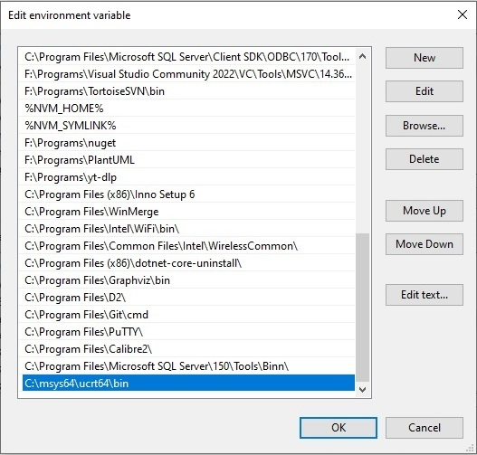

GCC and VS Code setup
Setting up compiler
- Follow the instructions from VS Code page
-
Add the C:\msys64\ucrt64\bin path in enviornment variables.
 -
Check the setup by running following commands.
gcc --version g++ --version gdb --version
Hello world project example
-
#include <iostream> #include "head.h" int main() { User austin("Stonecold Steve Austin", 316); austin.info(); } -
#include <iostream> #include "head.h" User::User(std::string nm, int ag) { name = nm; age = ag; }; void User::info() { std::cout << " name = " << name << "\n age = " << age << std::endl; } -
#ifndef head_h #define head_h #include <iostream> class User { public: User(std::string nm, int ag); void info(); int age; std::string name; }; #endif -
{ "version": "2.0.0", "tasks": [ { "type": "cppbuild", "label": "C/C++: g++.exe build active file", "command": "C:\\msys64\\ucrt64\\bin\\g++.exe", "args": ["-fdiagnostics-color=always", "-g", "${file}", "-o", "${fileDirname}\\${fileBasenameNoExtension}.exe"], "options": { "cwd": "${fileDirname}" }, "problemMatcher": ["$gcc"], "group": { "kind": "build", "isDefault": true }, "detail": "compiler: C:\\msys64\\ucrt64\\bin\\g++.exe" }, { "type": "shell", "label": "Run Project", "command": "C:\\msys64\\ucrt64\\bin\\g++.exe -fdiagnostics-color=always -g \"${workspaceFolder}\\*.cpp\" -o \"${fileDirname}\\${fileBasenameNoExtension}.exe\" && \"${fileDirname}\\${fileBasenameNoExtension}.exe\"", "options": { "cwd": "${fileDirname}" }, "problemMatcher": ["$gcc"], "detail": "compiler: C:\\msys64\\ucrt64\\bin\\g++.exe" } ] }